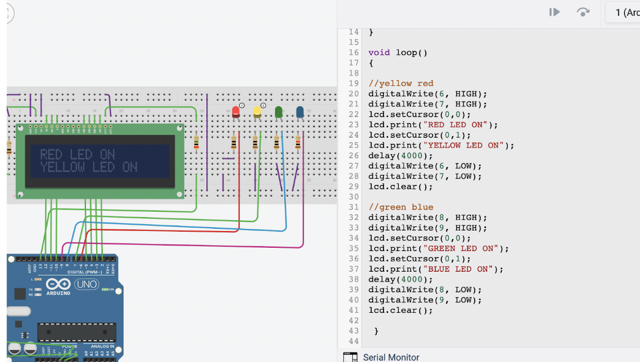

When I was a senior in highschool, I decided to take the course AP Computer science. I learned the only the very basics of Python, however, I also found a love to code.
As of October of 2023, I am currently a second year student at Wayne State University. I am working towards a Bachelors of Science in Computer Science within the College of Engineering. I have consistently achieved a 4.0 GPA and made the Dean's List each semester I've been enrolled at Wayne State University.
This class consisted of learning the basics of Python, of which I had previous knowledge of.

This is where we learned about loops and traversing through files.


I also learned how to create my own functions in order to make an interactive program. This one is a Computer Assisted Instruction program where the user can solve different mathematics problems.


Working with turtle and random libraries was a little tricky at first.


I created games such as this casino game using different functions.


I got my first glimpse of Object Oriented Programming while creating this virtual candy vendor class program.


I learned to make an interactive 2 player tik tak toe game using functions and array manipulation.
In this class, we used the Arduino IDE and a Microcontroller kit in order to allow use to program interactive devices.


We used different bytes to make up different symbols to be displayed on the LED Matrix.


We also used shift registers, wires, and resistors aswell as a program to flicker LEDs on and off.

And we displayed text on monitors as well as used simulators.


I learned memory management using object oriented objected programming.